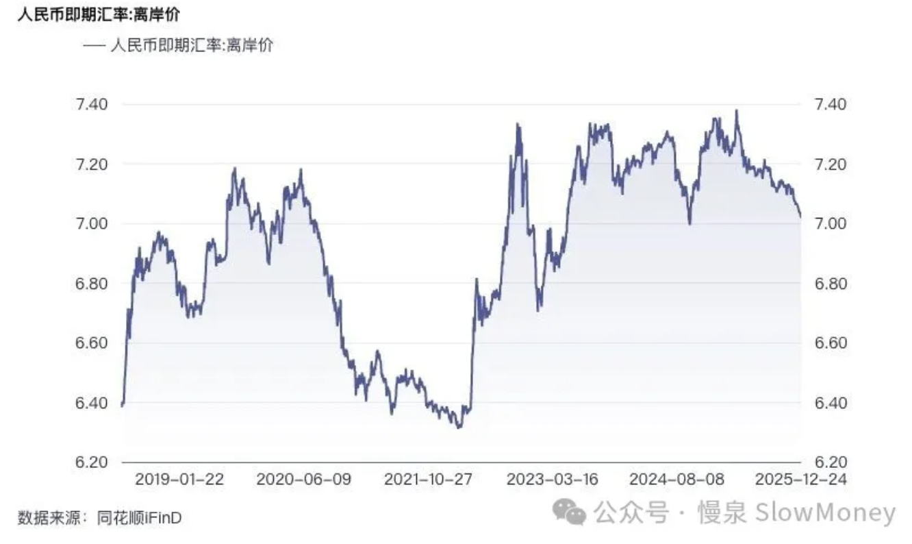

宏观讨论20251226-年底换汇额度用不用
2025-12-26 · 升值的 RMB · 宏观讨论（补档）
人民币全年持续升值，年底升值速度加快，摆脱了三年以来的持续贬值压力。

能用就用
当前的水平上，如果有外汇额度，换入美元进行投资或现金管理：
- 对中国经济乐观。 用美元部分投资中国资产，获得投资收益。
- 对中国经济不乐观。 进行债券或者其他资产投资——美元现金管理 3-5% 之间，即便人民币升值到 6.8 附近（持有美元下跌 3%），也具备竞争力。
升值的路上绊脚石太多
短期政策的方向影响较大。 在当前内需弱、外需强的背景下，持续升值的必要性很弱，反而对出口型企业造成较大的价格竞争劣势。
资本外流。 给本来外流的资金抬轿子。
资产定价的平衡。 房子 700 万能换 100 万美元，如果升值到 6.5，那么同样 100 万美元的房子跌 7.2% 就合理。反之也一样——日元贬值和日本股市起飞的道理。
所以
有额度就换，持有美元投资或者吃利息——需要担心的是人民币够不够……还有税的因素。
原文 / 观点：Matt · johsnon0827@gmail.com